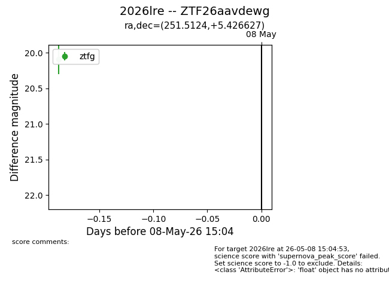
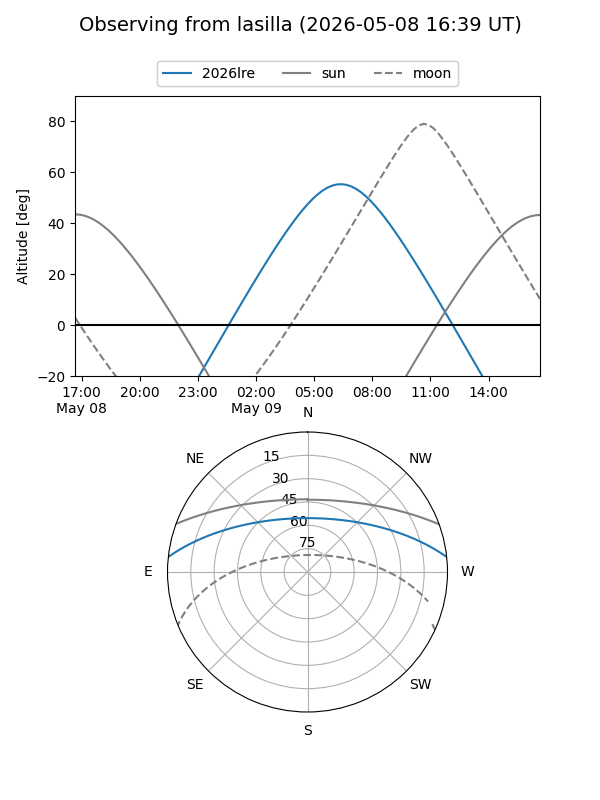
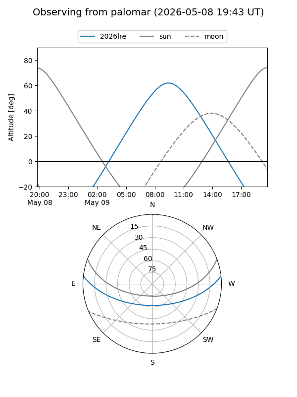
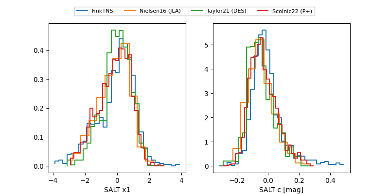

2026lre
Target 2026lre at 2026-05-08 15:06
Aliases and brokers:
FINK: link
Lasair: link
ALeRCE: link
TNS: link
YSE: link
alt names
ZTF26aavdewg (ztf,fink_ztf)
2026lre (tns,yse)
Coordinates:
equatorial (ra, dec) = 251.5124,+5.42663
equatorial (HMS+DMS) = 16:46:02.98,+05:25:35.86
galactic (l, b) = (22.7968,+30.26750)
Flags:
Photometry:
last ztfg=20.09
1 ztfg detections
Lightcurve

Visibility


Additional plots
